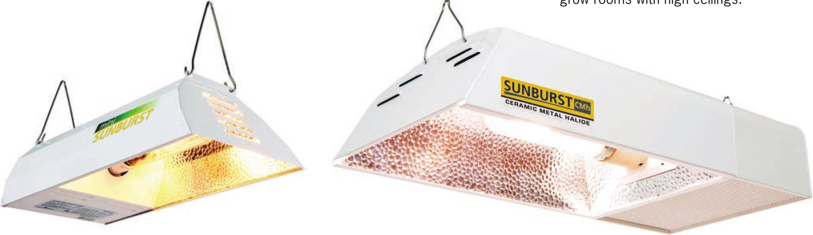
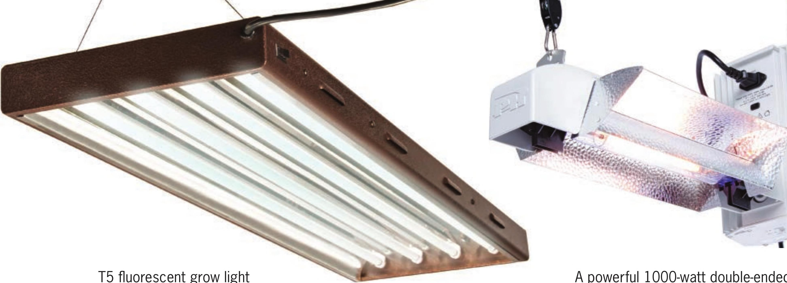

T5 fluorescent grow light A powerful 1000-watt double-ended (DE) HPS light is great for greenhouses and grow rooms with high ceilings. A 150-watt HPS light is great for grow tents and A 315-watt ceramic MH grow light small growing areas that require high light levels. They consume minimal electricity and are available in several spectrums, so you can grow a wide range of crops. They may not be ideal for crops that require intense light, such as peppers. Because they emit only small amounts of heat, they can be placed very close to the crop— within a couple of inches— which makes them great for seedlings and young plants. High Pressure Sodium (HPS) These are one of the cheapest options for highintensity lighting. HPS lights can generate a lot of heat, which is good in cold environments but difficult to manage indoors without proper ventilation and/or air-conditioning. They often are used for flowering crops indoors and are great for providing supplemental light in greenhouses. Usually they are positioned a few feet above a crop. Metal Halide (MH) and Ceramic Metal Halide (CMH) MH and CMH are highintensity lighting options often used for vegetative stages but are also capable of growing flowering crops. Light from MH bulbs appears blue and many gardeners find it pleasant to work under. The blue dominant light is also good for encouraging 30 DIY HYDROPONIC GARDENS

